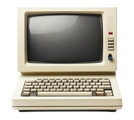

Portfolio 110:
Comparative Study on Different Types of Computers
Introduction
Computers are differentiated into 4 main classifications, namely: Supercomputers, Mainframe Computers, Mini Computers, and Micro Computers, which are also known as Personal Computers (mangala, 2025), while servers and workstations are different types of computers that have their own functions mostly seen in workplaces. The following tables identify, discuss, and analyze the differences of the types of computers, and its specifications.
Discussion
Table 1 discusses the specifications of supercomputers, mainframe computers, mini computers, and micro computers, specifically,
it analyzes the computers’ first prototype or built as an invention and the inventor, memory, processing speed, energy
consumption, and its applications or its field of use. This allows for easy understanding and comparison of the specifications
of the four main types of computers.
As per Hosch and L (2025), the supercomputer is the fastest and most powerful type of computer, where its field of use is
emphasized towards scientific and engineering applications, such as complex mathematical models and simulations. Furthermore,
being the fastest computer, its processing speed reaches at about 100 P–FLOPS or Peta–Floating Point Operations Per Second and
an allocated memory of 9.2 Petabytes. Its energy consumption depends on the severity of the tasks done, with most supercomputers
having more than 10+ Megawatts as their total energy consumption. (How Do Supercomputers Work? Key Features and Examples, 2025).
As stated by GeeksforGeeks (2025), the mainframe computers are used and known for handling vast amounts of server data, and for
massive amounts of transactional inputs, this comes with the fact that mainframe computers feature a processing speed of up to
100 Million Instructions Per Second (MIPS). Furthermore, mainframe computers usually have 32 Gigabytes up to 40 Terabytes of
random access memory, but in the Harvard Mark 1 it features 600,000 bytes of ram (Simon, n.d). Subsequently, mainframe computers are
usually measured per thousands of instructions, where in general mainframe computers may consume kilowatt–hour per 12,000 to 18,000
transactions (Vippala, 2025).
Whereas, the mini computer is used for the purpose of connecting devices into the same network and is usually meant for fields
such as business management, industrial automation, data processing and education, while it features a processing speed of 10
up to 30 MIPS (GeekforGeeks, 2025), and is also referred to as small or midsize servers (Wang, 2020). With its memory size at
around 1 Gb up to 128 and above Gb depending on the tasks to be done (How Much RAM Do You Really Need for Servers and VPS in
2025?, n.d.), with about 500 to 1000 Watts of energy assuming that the server is under normal operations, otherwise it could
consume up to 2000 watts (How Much Power Does a Server Use?, n.d.).
Lastly, the micro computer is the smallest and technically the most portable type of computer compared to the rest, it is used
for daily operations such as running applications, educational purposes, research, entertainment, and portability, where the
Micral N or the intel 8008 featured 16 kilobytes of memory at only 500 kilohertz processing speed (Dad, 2010). Though the power
consumption of the Micral N was not specifically stated, most modern micro computers typically run on 200 Watts up to 1000 Watts
depending on the hardware of the personal computer.
Fig 1. Specifications of Motherboards
| Types of Computers | Inventor & Invention (Brand) | Memory | Processing Speed | Energy Consumption | Field of Use |
|---|---|---|---|---|---|
| Supercomputers | Seymour Cray (Cray-1) | 9.2 Petabytes (Pb) | 100 Peta - Floating Point Operations Per Second (FLOPS) | (Depends on model of supercomputer) Measured in Megawatts | High - calculation fields, such as scientific or engineering fields, scientific research and simulations, and artificial intelligence |
| Mainframe Computers | Howard Aiken (Harvard Mark 1, or the IBM Automatic Sequence Controlled Calculator) | 600,000 Bytes of Ram and above | Up to 100 Million Instructions Per Second (MIPS) | 12,000 to 18,000 transactions per Kilowatt–Hour | Massive daily transactions (i.e. Banks) |
| Mini Computers | Bill Pentz (Sac State 8008) | 1 Gigabyte (Gb) up to 128 Gb | 10 to 30 MIPS | 500 to 1000 Watts | Business management, automation, data processing, scientific research, and multi-user purposes |
| Micro Computers | François Gernelle (Micral N) | 16 Kilobytes | 500 kilohertz | (Depends on model of microcomputer) Measured in Watts | Personal use, such as academic studies or research, entertainment, and accessibility to online applications. |
Supercomputers are designed to tackle most heavy computational tasks and can process massive amounts of data at incredible speeds (What Is a Supercomputer and How It Differs From Cloud Computing, 2023), where it is also known as the most powerful type of computer compared to the other classified types of computers, an example of its usage would be found at weather forecasts. It also features a really huge physical body that may encompass an entire room for its entirety to be placed perfectly fit.
Subsequently, mainframe computers are for massive transactional operations. Simply put, mainframe computers are huge data servers that are designed to process massive amounts of transactions from multiple users at a time, with a high level of security and reliability, mostly used for big technological companies and organizations (IBM, 2024). It features a set of computers similar but slightly smaller to that of a supercomputer, and is set inside huge rectangular cases.
Servers on the other hand, handle complex server processes such as managing multiple user queries, hosting websites, shareable drives for network devices, and database transaction management (Complete Guide to Servers, Types, and Features | Spiceworks, 2025). They are placed in rectangular cases and are bigger than workstations, but smaller than mainframe computers.
And foremost, the workstation is built for the purpose of single-user professional work, featuring a dedicated build made for graphics-demanding tasks, such as video editing, three dimensional modeling, graphics rendering, and scientific research. It is built the same way a normal office desktop would look like, but is usually more powerful than the normal office desktop, with a dedicated graphics card unit for graphics-related tasks (How Does a Workstation Differ From Desktop Computers?, 2023).
Next is the Mini Computer, which emphasizes on tasks including industrial automation, scientific research, and business management, where oftentimes also focuses on medium-scale applications rather than heavy computational tasks. It requires less space than the traditional desktop, and is useful for space efficiency (What Is a Minicomputer? Uses, Features, and How It Differs From Mainframes, 2023).
Consequently, the micro-computer, also known as the personal computer, is the smallest type of computer but has everything a computer needs. It is also designed to be used one person at a time. It includes a single integrated semiconductor chip that contains its Central Processing Unit (CPU), as well as its ram. It also features input and output devices, interconnected through its motherboard. Its form can either be that of a notebook (laptop), a handheld computer (smartphone or tablet), or the desktop computer itself (Wright & Shea, 2024).
Fig 2. Examples of Types of Computers
| Types of Computers | Sample Image | Description and Usage |
|---|---|---|
| Supercomputers |  |
Extremely high - performance computer for exceedingly high computations in engineering or scientific fields, which is also used for demanding mathematical simulations. |
| Mainframe Computers |  |
Slightly less powerful than the supercomputer, but takes in massive amounts of data for transactional processing. |
| Servers |  |
A computer that is designed for computing, storing, and managing data, devices and systems over a network. |
| Workstations |  |
A single-user computer made for the purpose of professional works related to graphics rendering, scientific research, video editing, and three-dimensional modeling. Subsequently, it also uses a dedicated graphics card unit with ample memory and advanced processors. |
| Mini Computers |  | Mini computers are mid-sized computers that are smaller than workstations and are usually bigger than micro computers. Mini computers are useful for education, office desktops, automation, business management, and scientific research. It is also commonly used for the intention of multiple users. |
| Micro Computers |  |
A small compact device such as smartphones, tablets, laptops, and personal computers (PC) used for entertainment, academic purposes, automation, and easy access to applications. |
Comparison and Contrast
Computers have different distinct processing speeds, memory capacity, and power consumption needed for the computer to run, with this, a comparison would make it easier to understand and identify the key contrasting differences between servers, workstations, mini computers, and micro computers.
Fig 3. Comparison of Four Types of Computers
| Types of Computers | Processing Speed | Memory Capacity | Power Consumption |
|---|---|---|---|
| Servers | 10 to 30 MIPS | 1 Gb to 128 Gb or above | 200 - 1,500 Watts |
| Workstation | 1.6 Gigahertz (GHz) to 3.8 GHz or higher | Up to 6 Terabytes (Tb) | 300 - 1,000 Watts |
| Mini Computers | 10 to 30 MIPS | 1 Gb to 128 Gb or above | 200 - 1,000 Watts |
| Micro Computers | 1 GHz to 3.5 GHz and above (depending on applications) | 4 Gb to 64 Gb | 20 - 600 Watts |